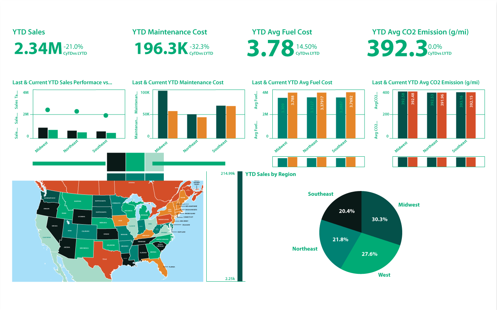
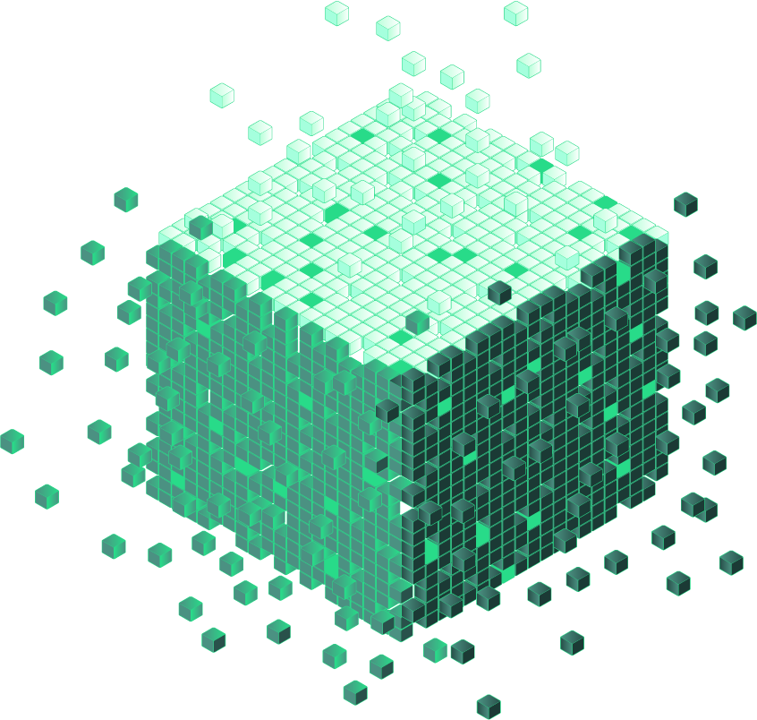
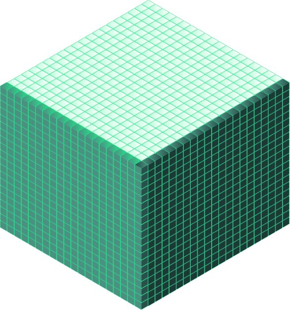
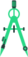

Soluciones Avanzadas
Business Intelligence
Conoce Qlik: la herramienta que nos permite descubrir y visualizar los datos para analizar con facilidad y lograr tomar decisiones de manera rápida y certera.

¿Por qué BI?
Datos confiables
Información precisa, limpia y auditada para garantizar una gestión corporativa segura y estructurada.
Tiempo real
Acceso a la información en el momento exacto que la necesitas, eliminando reportes obsoletos.
Información procesable
Obtén valor real de tus datos. Traduce los números en acciones y trabaja de manera más inteligente.
¿Cómo funciona?
El ciclo de vida de tus datos a través de nuestra metodología especializada.
Extraction
Lo primero es identificar los diferentes orígenes de donde proviene tu información la cual dará vida a tu nueva manera de analizar los datos.

Transformation
En esta etapa comienza la magia, a través de funciones y algoritmos, transformamos y centralizamos tus datos, creando un modelo único de datos el cual nos ayudará a poder representar gráficamente la información.

Load
Tu información se representa gráficamente. Comienza a explorar, analizar y mejorar tu toma de decisiones.
Beneficios del Sistema
Conecta
Conexión a cientos de orígenes para preparar de manera sencilla tus datos y crear reportes en minutos.
Administra
Gestión simplificada. Mantén tu organización siempre protegida, al día y bajo estrictos estándares de seguridad.
Crea
Los datos cobran vida. Creación de reportes atractivos, interactivos y responsivos para cualquier dispositivo.
Visualiza
Visualizaciones interactivas de autoservicio y herramientas intuitivas para realizar análisis profundos.

Desarrolla
Con una gran gama de opciones integradas, crea, desarrolla e implementa reportes completos en corto tiempo.
Comparte
Sé parte de la experiencia. Tienes disponible explorar y compartir tus creaciones desde cualquier dispositivo.
¿Estás interesado en adquirir una solución de BI?
Contacta a nuestros asesores de venta para una atención personalizada y da el siguiente paso en la evolución de tu data.
CONTACTAR ASESOR